반도체설계산업기사 (2017-05-07 기출문제)
1과목: 반도체공학
1. 1s22s22p63s23p4로 원자가 배열이 되어 있다. 이 원소의 원자 번호는 어떻게 되는가?
- 11
- 13
- 16
- 18
(정답률: 86%)

2. 실리콘 웨이퍼에 인(P) 원자를 2×1018m-3로 도핑 하였다. 열평형 상태에서 홀(hole)의 농도는? (단, ni = 1.5×1018m-3라 가정한다.)
- 2.25×1012m-3
- 1.125×1014m-3
- 133.33m-3
- 2.66×1020m-3
(정답률: 73%)
3. 베이스 공통 트랜지스터의 동작 상태를 4가지로 분류할 때 차단영역에 해당하는 것은?
- 이미터-베이스 접한 순바이어스, 컬렉터-베이스 접합 순바이어스
- 이미터-베이스 접합 순바이어스,컬렉터-베이스 접합 역바이어스
- 이미터-베이스 접합 역바이어스, 컬렉터-베이스 접합 순바이어스
- 이미터-베이스 접합 역바이어스, 컬렉터-베이스 접합 역바이어스
(정답률: 66%)
4. 제너다이오드에 대한 설명으로 옳은 것은?(오류 신고가 접수된 문제입니다. 반드시 정답과 해설을 확인하시기 바랍니다.)
- 높은 전압특성을 가지고 있다.
- 낮은 역전압에서 예리한 절연파괴를 갖는다.
- 제어정류기로서 유용하다.
- 부성 저항특성을 갖는다.
(정답률: 33%)
5. 반도체 재료의 성질이 아닌 것은?
- 광전효과가 나타난다.
- 홀 효과(hall effect)가 나타난다.
- 온도가 증가하면 도전율이 증가한다.
- 불순물을 주입하면 도전율이 감소한다.
(정답률: 80%)
6. 실리콘 공정에서 산화막(SiO2)의 용도가 아닌 것은?
- 불순물의 선택적 주입을 위한 마스크
- 전기적인 절연 및 유전체
- MOS 트랜지스터의 게이트전극
- 반도체 소자 표면의 보호막
(정답률: 68%)
7. n형 실리콘 반도체를 만들려고 할 때, 사용할 수 없는 불순물 원자는?
- B
- Sb
- As
- P
(정답률: 75%)
8. 공유결합에 관한 설명 중 틀린 것은?
- 최와각 전자들을 서로 공유하여 이루어진다.
- 결합력이 강하며 방향성을 가지고 있다.
- 가전자들이 자유롭게 움직일 수 있다.
- 실리콘(Si)의 결정결합의 형태에 해당한다.
(정답률: 76%)
9. 반도체 재료의 결정을 표시함에 있어서 격자내의 면이나 방향을 표시하는데, 각 방향의 기본 벡터의 정수배로 나타낸 값의 비율을 역수로 나타내는 방법은?
- Diamond Index
- Face Index
- Miller Index
- Body Index
(정답률: 84%)
10. MOSFET의 단자로 틀린 것은?
- 소스
- 콜렉터
- 드레인
- 게이트
(정답률: 88%)
11. 증가형 MOSFET의 문턱전압(threshold voltage, VT)에 대한 설명 중 옳은 것은?
- 문턱전압이 같으면 외부 바이어스에 무관하게 전류의 크기가 동일하다.
- 문턱전압은 외부 조건에 의하여 변하지 않고 일정하게 유지된다.
- NMOS의 경우 게이트와 소스 사이에 문턱전압 이하의 전압이 걸리면 전류가 흐른다.
- PMOS의 경우 문턱전압은 (-)의 값을 갖는다.
(정답률: 69%)
12. 반도체 재료에 전계를 인가함에 의해서 발생되는 전류를 무엇이라고 하는가?
- 드리프트(drift)전류
- 확산(diffusion)전류
- 차단(cutoff)전류
- 포화(saturation)전류
(정답률: 80%)
13. pn접합에서 외부의 전계가 없는데도 전위장벽이 발생하는 이유는?
- 확산작용
- 분리작용
- 항복작용
- 제너현상
(정답률: 72%)
14. 터널 다이오드에 관한 설명 중 틀린 것은?
- 가하는 도너 밀도를 매우 낮게 하면 공핍층이 좁아지고 전계의 세기가 증가한다.
- 역 바이어스 상태에서 저항이 작다.
- 펄스 및 계수회로에 유익하게 응용된다.
- 부성저항 특성을 갖는다.
(정답률: 59%)
15. 다이오드에 바이어스를 인가할 때 P형에 양(+)전원을 N형에 음(-) 전원을 연결하는 방식은?
- 액티브 바이어스 (Active Bias)
- 패시브 바이어스 (Passive Bias)
- 순방향 바이어스 (Forward Bias)
- 역방향 바이어스 (Reveres Bias)
(정답률: 84%)
16. MOSFET과 JFET의 가장 큰 차이점은?
- JFET는 정격전력이다.
- JEFT는 접합에 의해 게이트와 채널이 분리되어 있다.
- MOSFET에는 두 개의 게이트가 있다.
- MOSFET에는 물리적 채널이 없다.
(정답률: 75%)
17. pn접합의 항복현상 중의 하나인 사태항복(avalanche breakdown)이 발생되는 경우는?
- 순방향 전류가 과잉될 때
- 전위장벽이 영(zero)으로 감소될 때
- 순방향 바이어스 전압이 어떤 값을 가질 때
- 역방향 바이어스 전압이 어ᄄᅠᆫ 값을 가질 때
(정답률: 78%)
18. 다음 실리콘의 원소 배열 표현이 맞는 것은?
- 1s22s42p23s43p2
- 1s22s22p43s23p2
- 1s22s22p43s23p4
- 1s22s22p63s23p2
(정답률: 74%)
19. 다음 그림과 같은 소자와 관련하여 옳지 않은 것은?
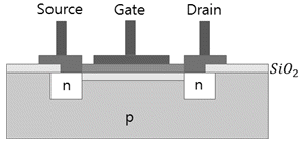
- 기판(substrate)과 드레인 사이에는 순방향 전압을 건다.
- 정상적인 경우 전류는 드레인에서 소스로 흐른다.
- 증가형 n채널 MOSFET 이다.
- 게이트에 (+) 전압 인가시 전류가 흐른다.
(정답률: 71%)
20. pn접합에서 순방향 바이어스를 인가하였을 때 일어나는 현상은?
- 이온화가 증가한다.
- 전류가 흐르지 않는다.
- 접합변의 정전용량이 증가한다.
- 접합면의 전위장벽이 낮아진다.
(정답률: 79%)
2과목: 전자회로
21. 펄스부호변조(PCM)에 대한 설명 중 틀린 것은?
- 점유 주파수 대역이 넓다.
- PCM 고유의 잡음이 발생한다.
- 전송 방해가 많은 통신로에서도 전송 품질이 좋은 통신이 가능하다.
- 원신호 펄스 재생은 진폭 변동이나 파형 찌그러짐에 영향을 받는다.
(정답률: 74%)
22. 교차 일그러짐(crossover distortion) 현상은 어느 증폭기에서 발생하는가?
- A급 증폭기
- AB급 증폭기
- B급 증폭기
- C급 증폭기
(정답률: 74%)
23. 부귀환 증폭기에서 Aβ≫1의 경우 증폭기 이득의 안정성이 향상되는 이유는?
- 증폭기 이득 A가 크기 때문이다.
- 귀환계수 β가 작기 때문이다.
- 증폭기의 부하 저항이
 만큼 감소되기 때문이다.
만큼 감소되기 때문이다. - 증폭기의 이득이 귀환회로의 β에 의해서 결정되기 때문이다.
(정답률: 72%)
24. 펄스회로의 출력이 Vo = 1 – e-0.1t일 때 시정수 몇 초인가?
- 20초
- 10초
- 1초
- 0.1초
(정답률: 75%)
25. 맥동률(γ)에 관한 설명으로 올바른 것은?
- 교류를 직류로 바꾸는 과정이다.
- 맥동률(γ)은
 로 구할 수 있다.
로 구할 수 있다. - 정류된 직류 출력에 교류성분이 얼마나 포함되어 있는지의 정도를 나타낸다.
- 교류를 직류로 만들 때 직류가 되지 않고 남아 있는 교류 성분으로 모양이 파도모양처럼 나타난다.
(정답률: 81%)
26. PCM 회로에서 빈칸 A의 회로는?
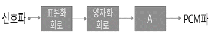
- 부호화 회로
- 비교기 회로
- 증폭 회로
- 필터 회로
(정답률: 79%)
27. 회로의 전달 특성은? (단, Q1과 Q2 트랜지스터는 스위치용이다.)
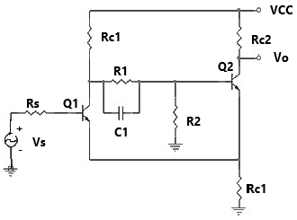
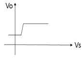
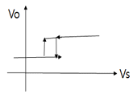
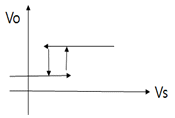
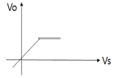
(정답률: 82%)
28. 그림의 입출력 특성을 가지는 회로는?
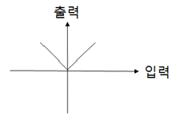
- 반파정류회로
- 전파정류회로
- 연산증폭기
- 클리핑 회로
(정답률: 72%)
29. 소신호 증폭기의 설명으로 옳은 것은?
- 부하선의 작은 부분만을 사용한다.
- 항상 mV 범위의 출력신호를 갖는다.
- 각 입력 주기에 포화가 일어난다.
- 항상 공통 이미터 증폭기이다.
(정답률: 65%)
30. FM신호의 검파회로에서 별도의 진폭제한회로가 필요 없는 회로는?
- 제곱 검파회로
- 복동조 주파수 변별 회로
- 포스토 실리(Forster-Seeley)주파수 변별회로
- 비검파기(ratio detector)
(정답률: 77%)
31. 전압 증폭도가 100인 증폭기의 전압이득은 몇 dB인가?
- 10
- 20
- 30
- 40
(정답률: 68%)
32. 컬렉터 접기 증폭회로에 대한 설명으로 틀린 것은?
- 이미터 플로어라고도 한다.
- 전압 이득은 1보다 약간 작다.
- 입력전압과 출력전압의 위상은 역상이다.
- 입력 임피던스는 높고, 출력 임피던스는 매우낮다.
(정답률: 70%)
33. 회로에서 Ei=1V일 때 전류 IL은 몇 mA인가?
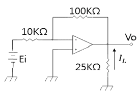
- 0.1
- 0.4
- -0.5
- -0.6
(정답률: 80%)
34. FET 증폭기의 고주파 응답을 결정하는 것은?
- 바이패스 커패시터
- 트랜지스터의 내부 커패시터
- 전압이득
- 전류이득
(정답률: 68%)
35. 회로에서 컬렉터 전류 IC를 구하면?（단, β=100 이고, VBE=0.7 이다.)
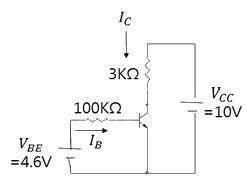
- 39mA
- 25mA
- 46mA
- 32mA
(정답률: 64%)
36. 연산증폭기 회로에 그림(a)를 입력할 때 그림(b)와 같은 출력이 나타나는 현상은?
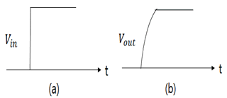
- 슬루 레이트(slew rate)
- 입력 바이어스 전류
- DC 오프세트(offset) 전압
- 유한한 전압이득
(정답률: 87%)
37. 연산증폭기의 스위칭 특성에 가장 크게 영향을 주는 것은?
- 입출력 임피던스
- 슬루 레이트
- 출력 오프셋 전압
- 동위상제거비(CMRR)
(정답률: 82%)
38. 증폭도 A가 매우 큰 증폭기에 귀환율 β의 부귀환을 가한 경우 전압이득은?
- Aβ
- 1/β
- 1/βA
- A/1+A
(정답률: 74%)
39. 교류를 직류전원으로 변환할 때 사용되지 않는 부품은?
- 변압기
- 정류다이오드
- 제너다이오드
- 트라이액
(정답률: 74%)
40. 다이오드의 전하축적 효과가 없을 때 옳은 것은?
- 순방향 전류값이 적다.
- 순방향 전류값이 크다.
- 역방향 회복시간이 무한대이다.
- 역방향 회복시간이 “0”이다.
(정답률: 73%)
3과목: 논리회로
41. 그림과 같은 전가산기(Full adder)의 입력이 A=1,B=0,C=1일 때 출력으로 옳은 것은? (단, So : Sum, Co : Carry이다.)
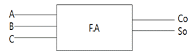
- Co = 0, So = 0
- Co = 0, So = 1
- Co = 1, So = 0
- Co = 1, So = 1
(정답률: 58%)
42. Shift register 안에 있는 binary number가 5번 Shift left 되었다. 현재 number 크기는 다음 중 어느 것에 해당되는가? (단, shift register의 길이는 충분하며 shift-in되는 bit는 모두 0 이다.)
- 맨처음 binary number × 5
- 맨처음 binary number ÷ 5
- 맨처음 binary number × 32
- 맨처음 binary number ÷ 32
(정답률: 81%)
43. 반가산기의 합 또는 반감산기의 차를 얻기 위해 필요한 게이트는?
- AND
- OR
- XNOR
- XOR
(정답률: 78%)
44. 4단 하향 Counter에서 10번째 클록펄스가 인가되면 각 단이 나타내는 2진수를 10진수로 변환하면?
- 6
- 7
- 8
- 9
(정답률: 72%)
45. 다음 중 조합논리회로에 해당하는 것은?
- RAM
- 레지스터
- 디코더
- 카운터
(정답률: 72%)
46. D 플립플롭에서 D 입력에 입력한 데이터의 각 비트는 클럭 펄스 몇 개의 시간만큼 늦어서 Q 출력에 도달하는가?
- 1
- 2
- 3
- 4
(정답률: 77%)
47. 다음 논리회로의 출력식으로 옳은 것은?
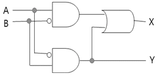
- X=A+B
- Y=A⊕B
- X=A⊕B
- Y=A⊕B
(정답률: 82%)
48. n비트의 입력으로 2n개의 출력 중의 하나를 1로 설정하도록 하는 장치는?
- 디코더
- 인코더
- 카운터
- 플립플롭
(정답률: 63%)
49. 원 정보부호가 1011 일 때 이것의 짝수 패리티 해밍코드(Hamming Code)를 구하면?
- 1011010
- 0101011
- 0001100
- 0110011
(정답률: 62%)
50. 시프트 레지스터(shift register)를 만드는데 가장 적합한 플립플롭은?
- RS 플립플롭
- D 플립플롭
- T 플립플롭
- JK 플립플롭
(정답률: 73%)
51. 아래 펄스발생기 중에서 한 상태에서만 안정되고 다른 상태에서는 불안정하여 일정한 시간 후에는 안정상태로 돌아가는 회로는?
- 비안정 멀티바이브레이터
- 다안정 멀티바이브레이터
- 쌍안정 멀티바이브레이터
- 플립플롭
(정답률: 75%)
52. 다음과 같이 연결된 RS 플립플롭은 어떤 플립플롭과 같은 기능을 하는가?
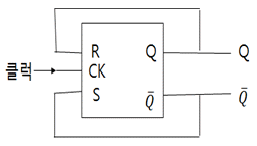
- D 플립플롭
- T 플립플롭
- JK 플립플롭
- 마스터-슬레이브 플립플롭
(정답률: 64%)
53. JK 플립플롭에서 J=1, K=1 일 때의 출력 결과는?
- 0
- 1
- 불변
- 반전
(정답률: 78%)
54. 다음 논리회로의 출력 D를 불대수 식으로 간략화하여 옳게 나타낸 것은?
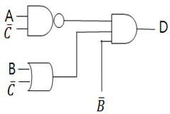
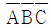
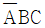
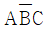
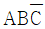
(정답률: 73%)
55. 5개의 플립플롭으로 구성된 상향 계수기의 모듈러스(modulus)와 이 계수기로 계수 할 수 있는 최댓값은?
- modulus : 32 최댓값 : 31
- modulus : 31 최댓값 : 32
- modulus : 6 최댓값 : 32
- modulus : 5 최댓값 : 32
(정답률: 71%)
56. 다음은 2개 입력 A,B를 가지는 NAND게이트의 진리표이다. z0,z1,z2,z3에 알맞은 이진 값은?
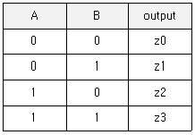
- 0001
- 0111
- 1110
- 0110
(정답률: 78%)
57. 10진수 22를 3초과 코드(Excess-3 code)로 변환한 것은?
- 0101 0101
- 1011 1100
- 0011 1011
- 1100 1100
(정답률: 81%)
58. 일반적으로 n비트의 2진 병렬가산기는 어떻게 구성되는가?
- 2n개의 반가산기로 구성된다.
- 2n개의 전가산기로 구성된다.
- n개의 반가산기로 구성된다.
- n개의 전가산기로 구성된다.
(정답률: 53%)
59. 한 플립플롭의 출력이 다른 플립플롭을 구동시키는 계수기는?
- 링 계수기
- 존슨 계수기
- 트위스트링 계수기
- 직렬 계수기
(정답률: 64%)
60. 우측이동 레지스터가 1001을 기억하고 있을 때, 클럭펄스가 2개 인가되면 각단의 값은? (단, 입력 데이터는 0 이다.)
- 0100
- 0110
- 1001
- 0010
(정답률: 63%)
4과목: 집적회로 설계이론
61. 동적 CMOS 로직과 거의 같으나, 출력단에 인버팅 래치가 달려있는 점이 다른 로직은?
- 카미노 로직
- 슈도 로직
- 도미노 로직
- 트랜스 로직
(정답률: 76%)
62. nMOS 인버터의 레이아웃 설계에서 A를 풀다운 트랜지스터 그리고 B를 풀업 트랜지스터라고 할 경우 A의 게이트 폭과 길이는 각각 4λ, 2λ 이고 B게이트의 폭과 길이를 각각 2λ, 8λ 라고 하면 이 인버터가 정상동작을 위하여 필요로 하는 형상비(ratio circuit)는 얼마인가?
- 2
- 4
- 6
- 8
(정답률: 62%)
63. 집적회로 레이아웃 설계에서 제일 처음 해야 할 일은?
- 평면 계획
- 블록 레이아웃
- 블록 배치
- 배선
(정답률: 83%)
64. 회로의 물리적인 크기만 스케일링할 때 소자 파라미터와 스케일링 비율이 바르게 연결되지 않은 것은? (단, 물리적 스케일링 비율은 α이다.)
- 게이트 채널 길이(L)는 1/α로 스케일링 된다.
- 게이트 채널 폭(W)은 1/α로 스케일링 된다.
- 게이트 산화막 두께(D)는 1/α로 스케일링 된다.
- 게이트 기생 접합 커패시턴스(Cj)는 1/α로 스케일링 된다.
(정답률: 76%)
65. CMOS 제조 과정에서는 nMOS와 pMOS 트랜지스터를 만들 때 생기는 n층과 p층간의 결합(n-p-n-p 또는 p—n-p-n-)에 의해 기생 트랜지스터가 구성되는데, 이 기생 트랜지스터가 결합되어 Vdd와 Vss사이에 전류 통로가 형성되는 현상은?
- 단락(Short)
- 래치업(Latch-up)
- 상호연결 기생요소
- ESD(Electrostatic Discharge)
(정답률: 85%)
66. 다음 VHDL 관련 표준에서 다중 값 논리를 규정한 부분은?
- IEEE std_1076
- IEEE std_1076.4
- IEEE std_1164
- IEEE std_1076.3
(정답률: 72%)
67. 다음 중 MOSFET 특성이 아닌 것은?
- 세 개의 층(금속, 산화층, 반도체)이 적층구조를 형성한다.
- 스위치 역할을 수행하여 전류의 흐름을 차단 또는 연결한다.
- 전류흐름에 전자와 정공이 모두 작용한다.
- 금속 층의 대용으로 현재는 다결정 실리콘을 사용한다.
(정답률: 59%)
68. nMOSFET의 반전 모드에서 게이트 전압을 증가(VG ＞ 0) 시키면 산화층과 실리콘의 경계면에 캐리어가 정공에서 전자로 바뀌게 되는데, 이때 형성된 층을 무엇이라고 하는가?
- 채널
- 공핍층
- 핀치오프
- 금속층
(정답률: 73%)
69. 다음 중 IC 패키지 타입이 아닌 것은?
- DIP
- SMP
- PLCC
- QFP
(정답률: 69%)
70. MOS 동적 논리회로를 정적논리와 비교한 것 중 장점에 해당하지 않는 것은?
- 부하소자가 on 되었을 때만 전력을 소모하는 회로를 설계할 수 없다.
- 스위칭 동작으로 인하여 정적 논리회로에 비해 전력 소모가 크다.
- 시스템의 타이밍 문제를 간소화할 수 있다.
- 클럭을 사용하기 때문에 클럭 부하를 갖는다.
(정답률: 50%)
71. 전압 제어 소자인 MOS FET를 기본 소자로 사용한 것은?
- CMOS
- TTL
- ECL
- SOI
(정답률: 81%)
72. 다음 중 MOS 트랜지스터를 만드는 공정기술이 아닌 것은?
- n-well 공정
- twin-well 공정
- SOI(Silicon On Insulator) 공정
- bipolar 공정
(정답률: 74%)
73. 게이트 어레이 방식 설계에 대한 설명으로 옳지 않은 것은?
- 웨이퍼를 절약할 수 있다.
- 칩 제조 공정의 시간이 절약된다.
- 회로 설계의 유연성이 증가한다.
- 표준 셀 방식보다 칩의 크기가 작다.
(정답률: 68%)
74. NAND 게이트 함수를 정적 CMOS 로직으로 설계할 경우 nMOS 로직과 pMOS 로직 구현을 위한 부울 식을 올바르게 표현한 것은?
- pMOS 로직의 경우
 nMOS 로직의 경우
nMOS 로직의 경우 
- pMOS 로직의 경우
 nMOS 로직의 경우
nMOS 로직의 경우 
- pMOS 로직의 경우
 nMOS 로직의 경우
nMOS 로직의 경우 
- pMOS 로직의 경우
 nMOS 로직의 경우
nMOS 로직의 경우 
(정답률: 59%)
75. 다음 회로와 같은 nMOS의 병렬구조에 대한 설명 중 틀린 것은?
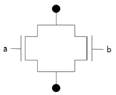
- OR 게이트 구조이다.
- a = 0, b = 1 일 때, 스위치 ON 상태이다.
- a = 1, b = 1 일 때, 스위치 OFF 상태이다.
- a = 1, b = 0 일 때, 스위치 ON 상태이다.
(정답률: 83%)
76. MOS 트랜지스터에서 게이트 출력이 “1” 또는 “0” 레벨에 있을 경우 DC 전력을 거의 소모하지 않는 디바이스는?
- n-MOS
- p-MOS
- I-MOS
- CMOS
(정답률: 83%)
77. 다음 중 디지털 회로 설계에서 회로 추출(circuit extraction)에 관한 설명 중 옳은 것은?
- 전체 시스템 관점에서 서례회로를 분할하는 과정
- 타이밍(timing)을 검증하는 과정
- 실제회로의 배치구도를 잡는 과정
- 회로 전반에서 발생하는 지연시간 등을 뽑아주는 과정
(정답률: 67%)
78. CMOS 디지털 집적회로의 동적 전력소모에 대한 설명으로 틀린 것은?
- 전원 전압이 클수록 증가한다.
- 동작 주파수가 클수록 감소한다.
- 커패시턴스 성분이 클수록 증가한다.
- 전력소모가 크면 동작온도가 증가한다.
(정답률: 60%)
79. 정적 CMOS 로직(static CMOS logic)에 대한 설명으로 틀린 것은?
- 서로 반대로 동작하는 nMOS와 pMOS를 이용하여 풀업과 풀다운(pull-down)의 동작을 대칭적으로 시키는 회로이다.
- nMOS 트랜지스터의 개수와 pMOS 트랜지스터의 개수가 같다.
- 시간이 비교적 많이 경과해도 출력전압이 변하지 않는 대신 동적회로보다 속도가 빠르다.
- nMOS 트랜지스터가 직렬 연결된 부분에 해당하는 pMOS 트랜지스터 부분은 병렬연결된다.
(정답률: 56%)
80. n채널 증가형 MOSFET에서 VGS = -5V, VDS = 13V일 때, 드레인에 흐르는 전류는 얼마인가?
- 26[mA]
- 3.6[mA]
- 6.3[mA]
- 0[mA]
(정답률: 70%)